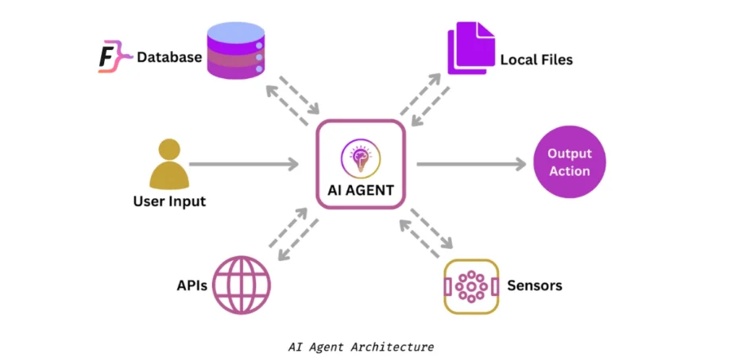

¿Te imaginas conversar con una inteligencia artificial que no solo entienda lo que dices, sino que también actúe por ti? Lejos de la ciencia ficción, los agentes de inteligencia artificial están transformando la forma en que interactuamos con la tecnología. Desde asistentes virtuales que gestionan nuestras tareas hasta sistemas autónomos que toman decisiones complejas, estos agentes ya forman parte de nuestro día a día. En este artículo te contamos qué son, qué pueden hacer actualmente y cómo están evolucionando para convertirse en herramientas cada vez más poderosas y autónomas.
¿Qué es un agente de inteligencia artificial?
Un agente de inteligencia artificial es un sistema capaz de percibir su entorno, tomar decisiones y ejecutar acciones para alcanzar un objetivo. A diferencia de los modelos de IA tradicionales, que responden a una sola entrada como una pregunta o instrucción, los agentes están diseñados para actuar de forma más autónoma, adaptándose a situaciones nuevas y gestionando múltiples tareas encadenadas.
Podemos imaginar un agente como una especie de asistente digital con iniciativa: no solo contesta lo que le pedimos, sino que también puede buscar información, planificar pasos intermedios y usar distintas herramientas para completar una tarea. Por ejemplo, si le pedimos reservar un vuelo, no solo mostrará opciones, sino que podría comparar precios, elegir la mejor combinación según nuestras preferencias y completar la reserva sin intervención adicional.
Estos agentes combinan distintos componentes como modelos de lenguaje, acceso a herramientas externas (navegadores, calendarios, correos…), capacidad de razonamiento y, en algunos casos, memoria. Su desarrollo marca un paso importante hacia sistemas verdaderamente interactivos e inteligentes.
Capacidades actuales: más que simples respuestas
Los agentes de inteligencia artificial han evolucionado más allá de ser simples herramientas reactivas. Hoy, muchos de ellos son capaces de entender, planificar y actuar, convirtiéndose en asistentes digitales capaces de ejecutar tareas complejas y adaptarse a distintas situaciones.
Una de las características más importantes de estos agentes es su habilidad para entender el lenguaje humano tal como lo usamos en la vida diaria. Esto incluye interpretar preguntas abiertas, entender el contexto de una conversación y adaptarse al tono del usuario. Por ejemplo, puedes decirle: “Organiza una reunión con el equipo para la próxima semana”, y el agente sabrá que debe revisar agendas, proponer horarios y enviar invitaciones.
Este tipo de comprensión va más allá de palabras clave. Gracias a los modelos de lenguaje avanzados, los agentes pueden captar matices, intenciones e incluso implicaciones no explícitas en las frases que les damos.
Otra capacidad destacada es su capacidad de conexión con servicios y aplicaciones del mundo real: calendarios, correos electrónicos, gestores de tareas, navegadores web, plataformas de mensajería o sistemas de gestión empresarial. Esto les permite pasar del texto a la acción.
Por ejemplo, puedes pedir: “Reenvía el informe del lunes a Marta y añade una nota con mis comentarios”. El agente buscará el documento, lo adjuntará en un correo nuevo y añadirá el texto que le dictes, todo en cuestión de segundos.
Los agentes más avanzados no solo ejecutan instrucciones, sino que razonan sobre los pasos necesarios para alcanzar un objetivo. Si les das una tarea compleja, como “Crea una estrategia de redes sociales para este mes basada en las tendencias del sector”, pueden dividirla en subtareas: buscar información relevante, analizarla, generar propuestas de publicaciones y programarlas en herramientas específicas. Esta capacidad de planificación se basa en técnicas como el chaining, donde los agentes encadenan acciones y decisiones, adaptándose según los resultados intermedios.
Muchos agentes pueden aprender de tu comportamiento, tus preferencias y tus decisiones pasadas. Esto les permite ofrecerte una experiencia más personalizada. Si sueles organizar tus reuniones por la tarde, priorizar tareas específicas o usas cierto lenguaje, el agente ajustará su comportamiento a tu estilo.
En contextos más complejos, como la atención médica, la agricultura o la educación, estos sistemas pueden adaptarse a cada usuario o entorno, ofreciendo recomendaciones ajustadas y relevantes. Algunos ejemplos de aplicación pueden ser en la educación con agentes que ayudan a planificar el estudio o explican conceptos difíciles con ejemplos personalizados, en programación aprovechando asistentes capaces de escribir código, sugerir soluciones y detectar errores comunes, en el sector agrícola utilizando sistemas que monitorizan cultivos y recomiendan acciones según el clima, el tipo de suelo o el crecimiento observado, o en el mundo empresarial usando agentes que gestionan correos, elaboran informes, programan reuniones y ofrecen análisis de datos en tiempo real.
Los agentes actuales ya no son meras herramientas que esperan órdenes. Son colaboradores activos, con la capacidad de interpretar, decidir y actuar en nuestro entorno digital.
De asistentes a colaboradores: la evolución en marcha
La inteligencia artificial ya no se limita a ejecutar órdenes simples. En los últimos años, los agentes han dado un paso más y están evolucionando para convertirse en colaboradores autónomos, capaces de asumir tareas más complejas y trabajar en conjunto con otros agentes o personas.
Uno de los avances más significativos ha sido el surgimiento de los multi-agent systems (sistemas multi-agente), donde varios agentes colaboran entre sí para resolver problemas que superarían las capacidades de un solo sistema. Cada agente puede tener un rol especializado —uno busca información, otro planifica, otro ejecuta— y trabajan en equipo para lograr un objetivo común.
Imagina una oficina en la que, en lugar de una sola persona encargada de todo, hay un equipo bien organizado: alguien investiga, otra persona redacta, alguien más revisa y otro presenta los resultados. Cada miembro tiene una función específica, pero colaboran y se coordinan para que todo salga bien. Así funcionan los sistemas multi-agente en el mundo digital.
Estos sistemas ya se están probando en áreas como logística, robótica, simulaciones científicas y optimización de procesos, con resultados prometedores.
Cada vez es más común encontrar agentes que se integran en entornos empresariales, científicos o técnicos. En empresas, ya se usan para analizar datos de clientes, generar informes, gestionar inventarios o incluso ayudar en la toma de decisiones estratégicas. En ciencia, colaboran en proyectos de investigación, modelado de fenómenos complejos o descubrimiento de patrones en grandes volúmenes de datos.
Estos agentes no solo ahorran tiempo, sino que también mejoran la calidad de las decisiones, al detectar correlaciones o patrones que podrían pasar desapercibidos a un ser humano.
El futuro apunta a agentes todavía más potentes. Ya se están desarrollando sistemas con memoria a largo plazo capaces de recordar interacciones pasadas para mejorar su comportamiento futuro, sentido de propósito en vez de limitarse a ejecutar tareas, podrán razonar sobre objetivos a largo plazo, o incluso auto-mejora iterativa mediante razonamiento cíclico, algunos agentes podrán evaluar su propio desempeño y buscar formas de optimizarlo sin intervención humana.
Esto abre la puerta a agentes verdaderamente inteligentes, capaces no solo de colaborar, sino también de aprender, adaptarse y evolucionar por sí mismos.
¿Qué podemos esperar en el futuro?
Todo apunta a que los agentes de inteligencia artificial dejarán de ser simples asistentes digitales para convertirse en verdaderos socios de trabajo, con capacidad para colaborar con nosotros en igualdad de condiciones en muchas tareas. La línea que separa lo que hace una persona de lo que puede hacer una IA se vuelve cada vez más borrosa.
A medida que su autonomía aumenta, también lo hace su fiabilidad y su capacidad para adaptarse a nuevos entornos y contextos sin necesidad de ser reprogramados constantemente. En el futuro cercano, no será raro interactuar con agentes que nos conocen, nos entienden y actúan en consecuencia, casi como lo haría un compañero de equipo.
Estos agentes podrían llegar a tomar decisiones complejas, manejar proyectos completos o incluso colaborar en investigaciones científicas, diseño de productos o gestión de empresas. Su presencia se hará cotidiana no solo en ámbitos laborales, sino también en nuestra vida diaria, desde el hogar hasta la educación o la salud.
Pero con este salto de capacidades también llegan preguntas importantes. ¿Hasta qué punto debemos delegar decisiones en una máquina? ¿Qué tareas deben seguir siendo humanas por naturaleza? ¿Cómo aseguramos que estos sistemas actúan con justicia, transparencia y respeto a nuestros valores?
Los desafíos éticos, sociales y técnicos que se plantean son tan importantes como los avances tecnológicos como por ejemplo, delegación de decisiones: ¿Puede un agente decidir por nosotros en temas sensibles, como la salud o la justicia? Transparencia y explicabilidad ¿Podemos entender cómo toma decisiones un agente complejo? ¿Podemos auditar su razonamiento? O qué opinas de la responsabilidad legal:, si un agente comete un error, ¿quién es el responsable? ¿El desarrollador, el usuario, la empresa?
Resolver estas cuestiones no es solo tarea de ingenieros o programadores. Requiere una colaboración entre expertos en tecnología, derecho, ética, sociología y filosofía, así como un diálogo abierto con la sociedad.
El futuro de los agentes de IA es prometedor, pero no está exento de riesgos. Por eso, el desarrollo responsable y transparente de estas tecnologías será clave para que podamos convivir y colaborar con ellas de forma segura y beneficiosa para todos.
Conclusión
En este artículo hemos visto cómo los agentes de inteligencia artificial están dejando de ser simples asistentes para convertirse en colaboradores autónomos capaces de entender, planificar y ejecutar tareas complejas en distintos ámbitos. Gracias a su capacidad para aprender, adaptarse y trabajar en equipo, estos sistemas están transformando la forma en que interactuamos con la tecnología y abren un abanico de posibilidades para el futuro, desde la gestión personal hasta aplicaciones en educación, salud y empresas.
Sin embargo, este avance también plantea importantes retos éticos y sociales que debemos abordar para garantizar un desarrollo responsable y transparente.
¿Qué opinas sobre el papel que deberían tener los agentes de IA en nuestra vida diaria y laboral? Déjanos tu comentario y comparte este artículo si te ha resultado útil.
Comentarios
Deja un comentario
Comentarios (0)
Daniel Rodríguez del Valle
Estoy deseando ver tus comentarios y estaré encantado de divagar con todos vosotros sobre este tema
18/05/2025